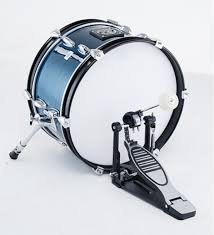
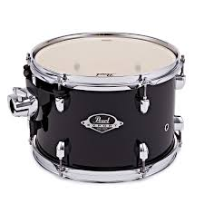
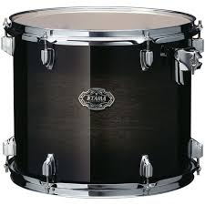
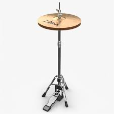
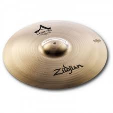
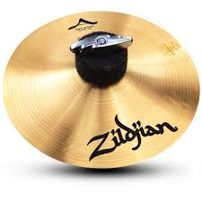
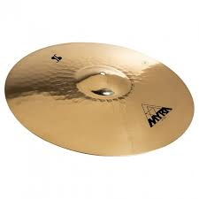
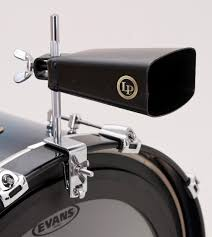

Drums

Kick drum, the base of any beat

Snare drum, the closest and main drum of the kit

High tom, the highest pitch drum of the kit

Mid tom, the second highest pitch drum of the kit

Floor tom, the lowest pitch drum of the kit
Cymbals

Hi-hat, two cymbals that can open or close via pedal

Crash, the main shocking cymbal of the kit

Splash, a small radius cymbal with high pitch

Ride cymbal, has the biggest radius cymbal with low pitch
Extras

Cowbell, an added unique sound to the kit